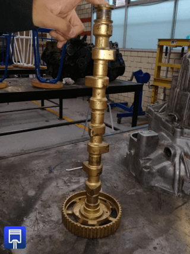

-
Definición.
El sistema de distribución se define como todo el conjunto de las piezas que tienen como tarea regular la entrada y salida de gases al cilindro para llenar y vaciarlo.
-
Tipos de sistema de distribución
Existen varios tipos de sistema de distribución automotriz entre los cuales podemos encontrar los siguientes sistemas:
OHV
SV
OHC
Es importante mencionar que estos tipos de distribución se clasifican en base a la posición del árbol de levas en el motor.

-
Elementos básicos.
El sistema de distribución esta principalmente conformado por los siguientes elementos:
Guías de válvula
Balancines
Árbol de levas
Válvula

-
Engranaje de mando.El engranaje de mando son dos piñones los cuales están sujetos, uno del cigüeñal por el extremo opuesto del volante y otro al extremo del árbol de levas.
En el momento de girar todo el cigüeñal hace girar el árbol de levas a la mitad de vueltas.
Esto se logra al engranar un piñón con el doble de dientes y esto se explica porque por cada dos vueltas del cigüeñal solo se lograra un ciclo completo, lo que se traduce en que cada cilindro se produce una sola admisión y un solamente un escape.
El engrane puede ser:
1 Directo, por medio de piñones.
2 Por medio de polea dentada de Nylon.
3 Por cadena metálica. Si se quiere reajustar se debe tomar en consideración los reglajes con los que nos dota el fabricante. -
Árbol de levas.
El árbol de levas es un eje que gira en solidario al cigüeñal y a la mitad de vueltas que este.
Está provisto de las levas en número de dos por cilindro y una más para la bomba de alimentación.
Las dos levas que tiene cada cilindro suelen ser las de:
1 Escape.
2 Admisión.
En el árbol de levas este va dispuesto también un piñón que servirá para mover por su parte inferior la bomba de engrase y por su parte superior el eje ruptor y por igual la pipa de distribución.